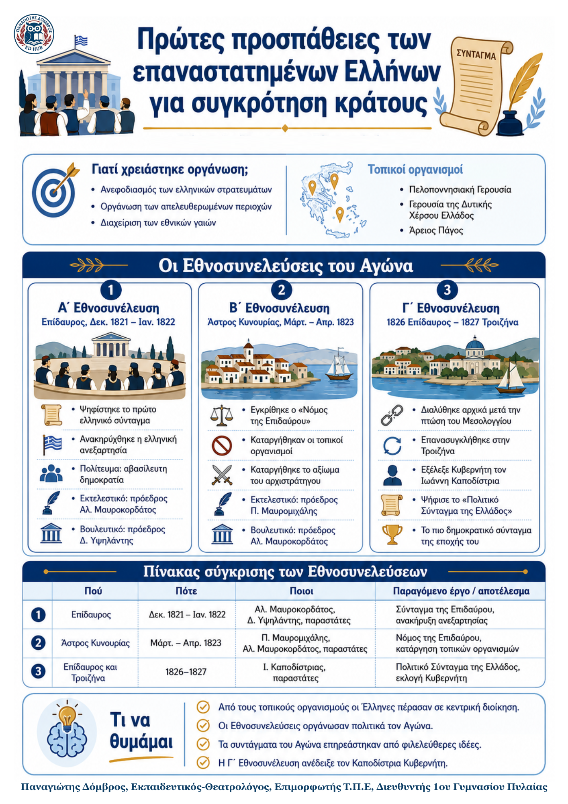

Δεν βρέθηκε η λέξη ή η φράση μέσα στην ενότητα.
1Η βασική ιδέα
Η Επανάσταση χρειαζόταν ανεφοδιασμό, διοίκηση των απελευθερωμένων περιοχών και διαχείριση των εθνικών γαιών. Οι τοπικοί οργανισμοί κάλυψαν αρχικά αυτές τις ανάγκες, αλλά προκάλεσαν και ανταγωνισμούς για την εξουσία. Η ανάγκη για ενιαία κεντρική διοίκηση οδήγησε στις Εθνοσυνελεύσεις, οι οποίες έδωσαν στην επαναστατημένη Ελλάδα συντάγματα, θεσμούς και κοινή πολιτική οργάνωση.
2Γιατί συγκλήθηκαν οι Εθνοσυνελεύσεις;
- • Ενιαία διεύθυνση του Αγώνα: οι τοπικές διοικήσεις δεν αρκούσαν.
- • Κεντρικά όργανα εξουσίας: έπρεπε να οργανωθούν κυβέρνηση και αντιπροσώπευση.
- • Συνταγματικοί κανόνες: χρειάζονταν κοινές αρχές για το πολίτευμα και τα δικαιώματα.
3Οι Εθνοσυνελεύσεις με μια ματιά
| Εθνοσυν. | Πού | Πότε | Κύρια πρόσωπα | Παραγόμενο έργο / αποφάσεις |
|---|---|---|---|---|
| Α΄ | Επίδαυρος | Δεκ. 1821 – Ιαν. 1822 | Αλ. Μαυροκορδάτος Δ. Υψηλάντης |
Σύνταγμα της Επιδαύρου: ανακήρυξη ανεξαρτησίας, αβασίλευτη δημοκρατία, Εκτελεστικό και Βουλευτικό. |
| Β΄ | Άστρος Κυνουρίας | Μάρτ. – Απρ. 1823 | Π. Μαυρομιχάλης Αλ. Μαυροκορδάτος |
Νόμος της Επιδαύρου: τροποποίηση του πρώτου Συντάγματος, κατάργηση τοπικών οργανισμών και αξιώματος αρχιστράτηγου. |
| Γ΄ | Επίδαυρος (1826) Τροιζήνα (1827) |
1826 και άνοιξη 1827 | Ι. Καποδίστριας (εκλέχθηκε Κυβερνήτης) |
Εκλογή Κυβερνήτη για 7 χρόνια και Πολιτικό Σύνταγμα της Ελλάδος: διάκριση εξουσιών, φιλελεύθερες και δημοκρατικές αρχές. |
4Τι πρέπει να θυμάμαι
| • Η Α΄ Εθνοσυνέλευση δημιούργησε το πρώτο ελληνικό Σύνταγμα και κεντρικά όργανα διοίκησης. | • Η Β΄ κατήργησε τους τοπικούς οργανισμούς και ενίσχυσε την ενιαία διοίκηση. |
|---|---|
| • Η Γ΄ εξέλεξε τον Ιωάννη Καποδίστρια Κυβερνήτη και ψήφισε το πιο δημοκρατικό Σύνταγμα της εποχής. | • Οι πολιτικές αντιθέσεις για την εξουσία συνέβαλαν στην εμφύλια σύγκρουση του Αγώνα. |
